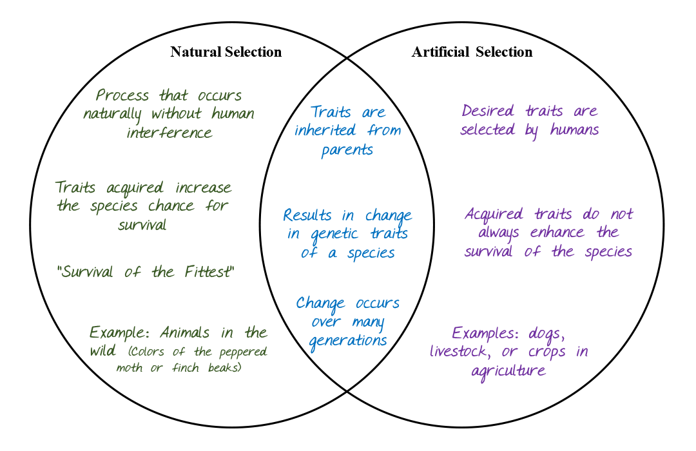

BIOLOGY EDUCSOURCE: Natural Selection
Author: XC
Charles Darwin's theory of natural selection, presented in his book 'On the Origin of Species,' is based on the idea that organisms with traits that make them more likely to survive, mature, and reproduce in their environment pass on their traits to the next generation. Darwin's observations of different species of finches on the Galápagos Islands provided significant evidence for his theory.
Darwin noticed that the finches had different beak shapes depending on the type of food available on the island they inhabited. For example, finches with larger, stronger beaks were better equipped to crack open hard nuts, while finches with smaller, more delicate beaks were better at eating seeds.
Over time, the finches with advantageous beak shapes were more likely to survive and reproduce, passing on their traits to their offspring. This process, known as natural selection, is a driving mechanism of evolution and explains how different species can develop from a common ancestor over time. Darwin's theory of natural selection revolutionized the field of biology and remains one of the most important scientific discoveries in history.
Artificial selection is the process of selectively breeding organisms to perpetuate desirable traits and has been used for centuries in agriculture and animal breeding. It is similar to natural selection but with human interference. Moreover, it has created desired traits in crops and animals, such as breeding pigeons for desirable characteristics in captivity.
Below are a few examples of Natural Selection:
Giraffes
Giraffes with long necks have a competitive advantage by able to feed on leaves that others cannot, allowing them to survive and pass on their traits to future generations, unlike those with shorter necks.
Finches
Darwin collected 14 finches from the Galápagos Islands during his HMS Beagle voyage. These finches, belonging to the same taxonomic family, have varying beak sizes and shapes due to their primary food sources and isolation. The green warbler finch has a slender beak for insects, while the large ground finch has a stocky beak for seeds and nuts.
Play the Game below to test your knowledge!
Some moth species exhibit distinctive physical features, with brown-bodied moths possessing brown wings and white-bodied moths possessing white wings. These moths also exhibit a unique resting pattern, with brown moths typically resting on pine tree bark, while white moths prefer to rest on the white bark of aspen trees. If all aspen trees within a region were removed, which moth species would have a better chance of survival? Please select a month to reveal the answer.
Breeding programs can create traits that are not naturally occurring in animals, plants, fruits, or vegetables due to human preferences. Is this an example of Artificial Selection? Click the cat to reveal the answer!